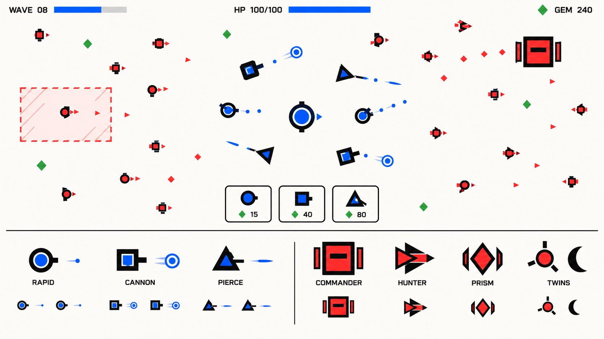
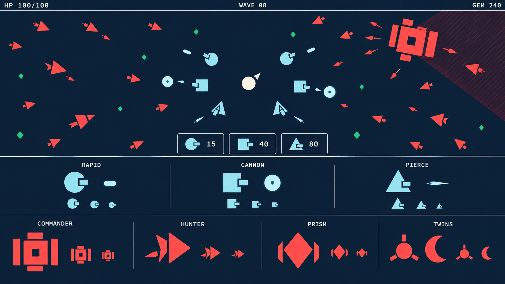
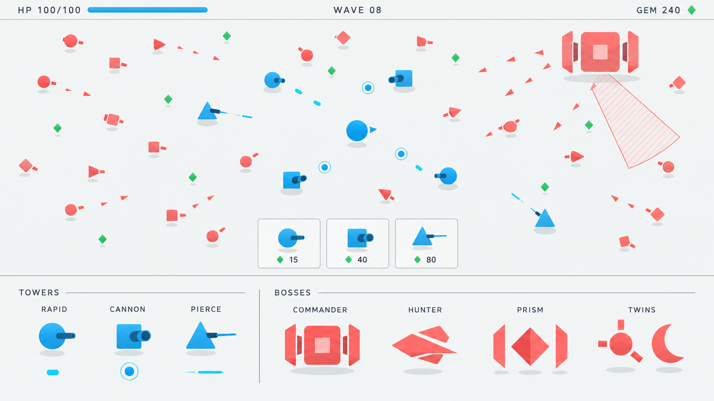
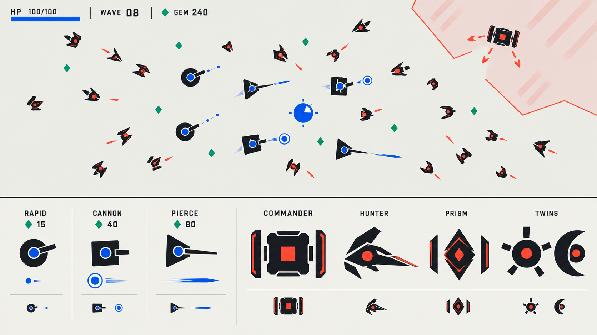

第二轮：减少装饰，用轮廓、比例、留白与动作逻辑建立风格。每稿包含战斗概念与塔、弹体、Boss 图鉴。点击图片打开原图，或选择单稿放大。

暖白、钴蓝和朱红，强调平面色块与留白。比较三塔的轮廓、三种弹体以及四个 Boss 的个性。

深藏青纯色底与明亮实心几何。比较危险边界、敌我弹体和小单位能否保持分离。

整块几何和少量大色面，强调优雅的比例。比较克制体积感是否有助辨识，避免阴影成为噪声。

深色主体、有限阵营点色与负形。比较不用细节装饰时，Boss 和塔是否仍能成立。修订版已去除额外岩块并缩小战斗中的 Boss。
查看比稿评估与落地规则